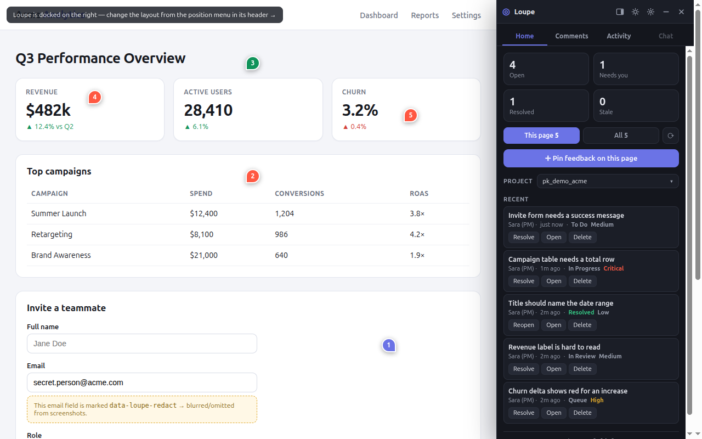

Pin a comment to any element on your live web app, attach a screenshot or a short recording, and move it across a five-stage board. Claude Code, Anthropic's coding agent, reads the feedback over the Model Context Protocol (MCP), an open standard that lets AI agents call external tools. Pins re-anchor after you redeploy.
npm install @loupekit/sdk
Installing the package does not show the widget yet. Next, initialize it: see Install with npm, or follow the first-comment tutorial.

A browser widget, a Node API with a triage dashboard, an MCP server, a browser extension, a Laravel package and Loupe Hub. All open source.
Click an element with Inspect, drag a rectangle with Region, record a region for up to 20 seconds with Record, or drop a free Note anywhere on the page. The widget runs in a shadow root (a DOM subtree isolated from the page), so its CSS does not touch your page.
Each pin stores a fingerprint of its element: test id (its data-testid, data-test or stable id attribute), CSS path, XPath (a path expression through the DOM tree), text and attributes. When the markup changes, Loupe finds the element again. A pin it cannot place with confidence is marked as moved.
Comments move through Queue, To Do, In Progress, In Review and Resolved. Filter by priority, change type, device and page, or open the Needs you view.
The Node MCP server has 19 tools. Claude reads a comment with its screenshot as an image, proposes an HTML and CSS change back to the dashboard, opens a pull request, and moves the comment to In Review. The Laravel package has its own MCP server with 4 tools.
Reply to any comment, @mention a teammate to notify them, and react with an emoji. The widget refreshes every 10 seconds, so new replies appear without a reload.
Group projects into organizations. A project sends each new comment from a member of its organization to another project in the same organization, or to a signed webhook. Between two projects, the receiver's status changes and both sides' replies sync back.
The Node API checks a per-project secret and an HMAC (a keyed hash signed with that secret) of each user id. The Laravel package uses your app's sign-in and gates.
Comment on any site without installing anything on it. Start Loupe from the toolbar or the right-click menu. The extension captures the visible tab through the browser.
A reviewer clicks an element on the live app and writes a title and a description. Loupe captures a screenshot, the element's HTML, its computed styles and an anchor. You can also drag a region to screenshot or record it, or drop a free note anywhere on the page.
The comment saves to your backend: the Node API or your Laravel app. Screenshots and recordings upload as separate files, and the comment keeps their URLs. With no backend, comments stay in the browser's local storage.
Every comment starts in Queue. Move it through To Do, In Progress, In Review and Resolved on the dashboard, and set its priority and change type.
Claude Code reads the comment over MCP, with the screenshot as an image, the element's HTML and its styles. It proposes the changed HTML and CSS back to the dashboard and moves the comment to In Review. A person reviews the change and resolves it.
Each guide solves one task, from installing the widget to routing tickets through Loupe Hub. New to Loupe? Read the complete guide first.
New to Loupe? Follow a tutorial end to end on your own machine.
Loupe is an open-source visual-feedback tool. You embed its widget in your web app, and signed-in reviewers pin comments to elements, attach screenshots or short recordings, and discuss them in threads. Claude Code reads the feedback over MCP.
Each comment stores a fingerprint of its element: test id, CSS path, XPath, text and attributes. On load, Loupe tries a unique test id or id first, then a unique CSS path rooted at a stable id, then scores candidates by weighted similarity. A pin that scores below 0.5 is marked as moved instead of being attached to the wrong element.
Five: Queue, To Do, In Progress, In Review and Resolved. New comments start in Queue. The MCP tools tell an agent to stop at In Review when a change is ready, so that a person reviews and resolves it. The legacy statuses open and done map to Queue and Resolved.
Through MCP. The Node MCP server (@loupekit/mcp) has 19 tools, including list_comments, get_comment, update_status, propose_change and create_pr_for_thread. The Laravel package has a built-in MCP server with 4 tools: list-comments, get-comment, propose-change and update-status.
Loupe Hub groups projects into organizations and routes tickets between them. A project can send each new comment from a member of its organization to another project in the same organization or to a signed webhook. When the receiving app changes the ticket's status or replies, Hub relays the update back to the sender.
Yes. Loupe is free, and its source is public on GitHub. The SDK (@loupekit/sdk), the MCP server (@loupekit/mcp), the shared package (@loupekit/shared) and the Laravel package (loupekit/laravel) are published under the MIT license.